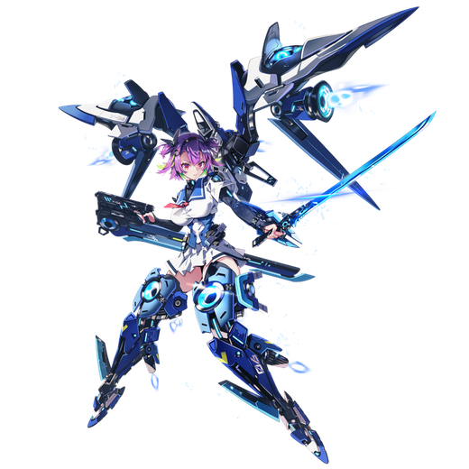

基本データ
- コスト
- 3.0
- 体力
- 未入力
- 赤ロック
- 33
- 動画
- 登録動画

Move Table
| 射撃 | 名称 | 弾数 | 威力 | 備考 |
|---|---|---|---|---|
| メイン射撃 | 複合兵装・射撃 | 9 | 210 | 弾数豊富なBR |
| チャージメイン射撃 | 複合兵装・強力射撃 | - | 57～667 | 細い照射ビーム |
| サブ射撃 | ビームサーベル・投擲 | 2 | 81-154 | 2連投可能なブーメラン |
| 弾切れ時サブ射撃 | スピアヘッド01 | - | 345 | 強制ダウン |
| 横サブ射撃 | エネルギー発射装置・側転 | 1 | 30-414 | 側転しながら爆風つきミサイル |
| 後サブ射撃 | エネルギー発射装置・散射 | 30-389 | - | 足を止めて爆風付きミサイル拡散撃ち |
| 後サブ格闘 | エネルギー発射装置・収束 | 1 | 180-324 | 1凸解禁。足を止めて単発ビーム |
| 格闘 | 名称 | 入力 | 弾数 | 威力 | 備考 |
|---|---|---|---|---|---|
| メイン格闘 | 複合兵装・斬り | NNN | - | 571 | 打ち上げから2連斬り抜け |
| メイン射派生 斬り抜け | N→メ射 | - | - | 447 | 受け身不可付与 |
| NN→メ射 | - | - | 542 | ||
| NNN(1)→メ射 | - | - | 639 | ||
| サブ射派生 高速斬り | N→サ射 | - | - | 656 | 3凸解禁。連続斬り抜け |
| NN→サ射 | - | - | 719 | ||
| NNN(1)→サ射 | - | - | 788 | ||
| 横格闘 | ビームサーベル・斬り | 横N | - | 495 | 2連斬りから斬り抜け |
| メイン射派生 斬り抜け | 横(1)→メ射 | - | - | 435 | N格と同様 |
| 横→メ射 | - | - | 569 | ||
| サブ射派生 高速斬り | 横(1)→サ射 | - | - | 641 | |
| 横→サ射 | - | - | 737 | ||
| 前格闘 | ビームサーベル・斬り | 前 | - | 479 | 射撃バリア突進 |
| メイン射派生 斬り抜け | 前(2)→メ射 | - | - | 551 | Nと同様 |
| サブ射派生 高速斬り | 前(2)→サ射 | - | - | 711 | Nと同様 |
| BD格闘 | ビームサーベル・斬り | BD中前N | - | 578 | フワ格闘 |
| メイン射派生 斬り抜け | BD中前→メ射 | - | - | 447 | N格と同様 |
| BD中前N(1)→メ射 | - | - | 620 | ||
| サブ射派生 高速斬り | BD中前→サ射 | - | - | 656 | |
| BD中前N(1)→サ射 | - | - | 788 | ||
| 後格闘 | 腕部グラップル | 後 | - | 30 | 当たった相手を引き寄せるアンカー射出 |
| メイン射派生 斬り抜け | 後→メ射 | - | - | 330 | N格と同様 |
| サブ格闘 | 脚部ブレード | サブ格x3 | - | 759 | 長い連続キック |
| 横サブ格闘 | 複合兵装・重撃 | 横サブ格 | - | 240 | 大きく回り込んで斬り上げる |
| バーストアタック | 名称 | - | 威力 | ||
| バーストアタック | ワルキューレの舞 | - | //966/877 | 最終段射撃の格闘多段攻撃 | |
| 後バーストアタック | ワルキューレの翼 | - | - | ブーストを回復する時限強化 |